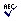

Spell Checking
Spell Check
Check spelling is a function in the FCKeditor which will allow you to check if you didn't make any mistakes in spelling while writing.You must notice that this function depands on the editors settings and could be different than shown below.
To activate the function simply press on your toolbar. A popup window called "Spell Check" will appear:
In the top of the window you will find a field with your text. The first word which is incorrect will be highlighted and will also appear in the field called "Not in dictionary". To ignore the mistake press "Ignore" or "Ignore All" if you want to ignore the mistake in the whole text. If you want to correct the mistake:
1. choose the word you had in mind from the list below the "Change to" field. If you peak a word it will appear in the "Change to" field.
2. press "Replace" and the highlighted word will be corrected. If you want to correct the same mistake in the whole text press "Replace All"
When the check spelling will finish an information about the amount of words changed will appear:
Pressing "OK" will end the spell checking procedure.
Copyright © 2009, Robert Moorehouse